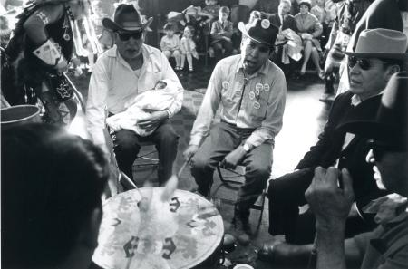
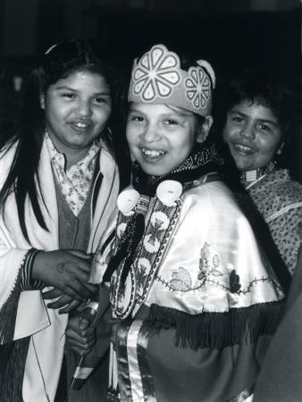

The American Indian Center of Chicago was organized in 1953 by the Chicago Indian community, with an important assist from the American Friends Service Committee, in response to a flood of the first people of this country from reservations throughout North America. The Indian Relocation Act of the ’50s, operated in concert with a policy of selective termination of tribal status, was a concerted attempt to break up the reservation system. Chicago was the only one of the five original relocation cities without a large in-state reservation. As a result, Native people from tribes throughout the country, arrived in Chicago. In addition to the Oneida, Ojibwa, Menominee, Sac and Fox, and Potawatomi of the north woods, Lakota, Navajo, Blackfoot, Papago, and many others were represented. The result was (and is) a multi-tribal community (including members of more than 50 tribes) searching for a common social and cultural ground.
Implementation of the Relocation Program sent thousands of Natives to the city, where they quickly began to find life difficult and challenging in an unfamiliar environment. In important ways, it has served as a model for the many urban centers and other social service and educational organizations that have arisen throughout the country. In addition, AIC has provided a beginning space for many Native American programs in the Chicago area.
Changing dramatically over the years, in response to the changing nature and needs of the Chicago Indian community, AIC has introduced many of the academic, health, and social service programs that have become viable, independent agencies in their own right. In all those years, certain elements of AIC operation have remained constant.
From the beginning, AIC has been a brave experiment in community self-determination. Managed by a Board of Directors comprised of Native Americans elected from out of the Chicago Indian community, the Center has steadfastly supported the collaboration between the service population and the managers.